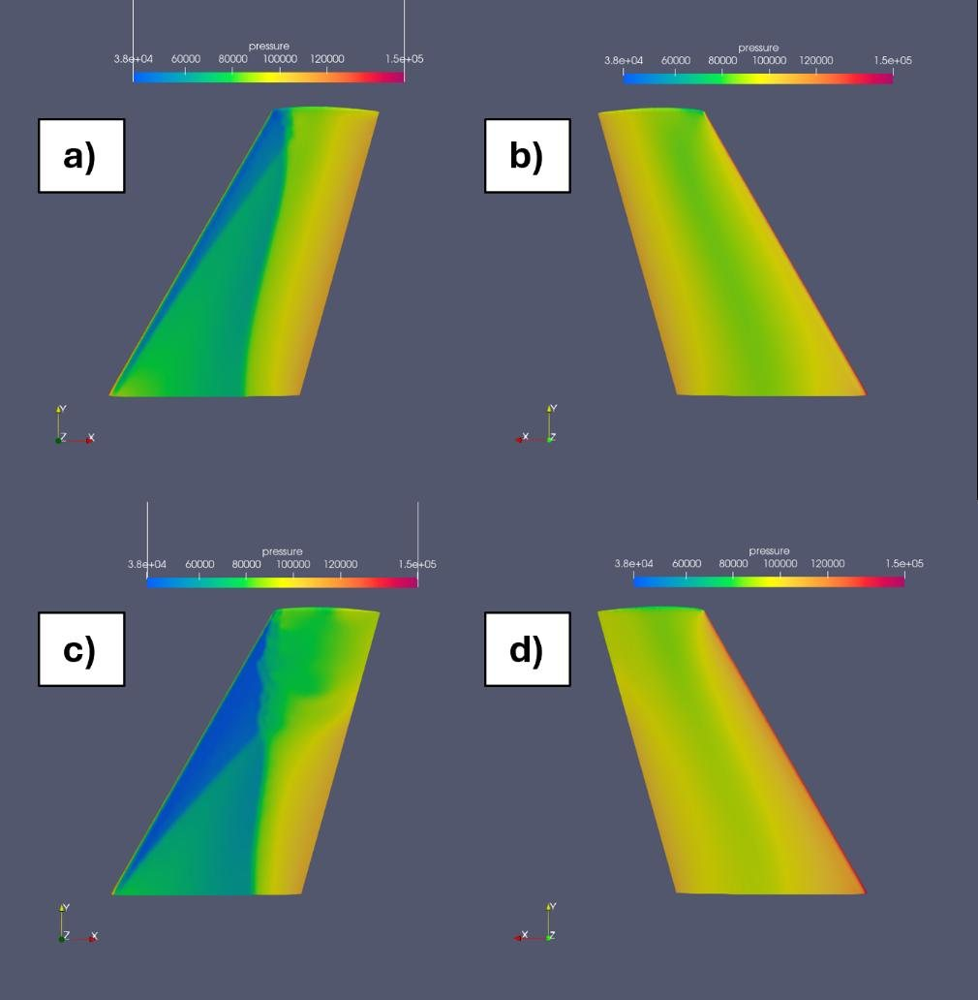

MEng Aerospace Engineering · University of Sheffield
Aerospace engineering graduate with hands-on experience in CFD, simulation validation and building
software tools around engineering data. I enjoy taking ideas from concept through analysis to something
people can use, and I'm looking for a graduate role in aerospace engineering.
Transonic CFD of the ONERA M6 wing in ANSYS Fluent, validated against wind tunnel data and explored in an interactive VR environment built in Unity.
About me
I'm an aerospace engineer with an MEng in Aerospace Engineering from the University of Sheffield.
I enjoy the full design cycle: sketching an idea, modelling it in CAD, analysing it, and then making and
testing a real prototype.
Alongside design and analysis I write software to automate calculations, process data and visualise results.
My dissertation combined both: I built a validated CFD model of a transonic wing and a virtual reality tool,
written in C#, for exploring the results.
Outside of work I follow the space and aviation industries closely, from new launch vehicles to sustainable
aircraft, and I enjoy flight simulation and building small engineering side projects. To stay active I go to the
gym regularly, run, and go hiking and climbing.
Skills
Aerodynamics & CFD
ANSYS Fluent
Meshing & y+ / inflation layers
RANS / Spalart–Allmaras
Mesh convergence studies
Validation vs. experiment
ParaView
ANSYS CFD-Post
Transonic aerodynamics
Software & VR
Unity
C#
VR / XR Interaction Toolkit
Blender
Python
NumPy / pandas
Matplotlib
MATLAB
Mechanical & Design
SolidWorks
Fusion 360
Technical drawings
GD&T
FEA
3D printing
Professional
Technical reports
Literature review
Presentations
Project planning
MEng Dissertation · University of Sheffield · 2025
Understanding and Simulating Flows Through VR
I simulated transonic airflow over the ONERA M6 wing in ANSYS Fluent, validated the results against wind tunnel
data, and built an interactive VR environment in Unity for exploring them: walking around the wing, sliding
through pressure planes, watching the flow animate and probing velocities with a controller.
Flow case
ONERA M6, Mach 0.84, Re 11.72×106
CFD tools
ANSYS Fluent, ParaView, CFD-Post
VR tools
Unity 6, C#, XR Toolkit, Meta Quest 2
1.2%Lift coefficient error vs. experiment at α = 3.06°
3.48MCells in final mesh, from a 4-level convergence study
7Spanwise sections validated against wind tunnel Cp
100+Flow fields exported into the VR pipeline
The problem
CFD results are usually viewed as 2D graphs and static contours in menu-heavy software, which makes 3D phenomena
like shockwaves and flow separation hard to picture. The project asked whether VR could make them intuitive,
using the ONERA M6 transonic benchmark, which produces a clear shockwave and shock-induced separation.
Pipeline: from solver to headset
ANSYS FluentSteady RANS, exported as EnSight Gold
ParaView / CFD-PostPlanes & surfaces as X3D, streamlines as CSV
BlenderVertex colours → FBX
Unity 6Custom shader, C# particles, XR UI
Meta Quest 2Quest Link / Air Link
CFD setup
I built a hemispherical domain ten root chords in diameter around the swept ONERA M6 wing, with a refined
body of influence over the wake and tip vortex. I used a tetrahedral mesh with local sizing down to 3.75 mm at the root and tip.
To use Spalart–Allmaras wall functions I targeted y+ ≈ 30. Working from Sutherland's law,
the freestream conditions and a skin-friction estimate (uτ = 10.40 m/s), I calculated a
first inflation layer height of 4.64×10−5 m. The pressure-based solver modelled
air as an ideal gas at Mach 0.84 for two test cases: α = 3.06° (mostly attached flow) and 6.06° (shock-induced separation).
Refined surface mesh on the wingInflation layers sized for y+ ≈ 30
Validation against experiment
In a four-level mesh study (0.89M to 7.35M cells), going from the fine to the ultra-fine mesh changed CL by less than 0.5%,
so I used the fine mesh (3.48M cells) for all results.
α = 3.06°α = 6.06°CFDExperiment
Mesh convergence study. Solid lines are CFD; dashed lines are the experimental values (Schmitt & Charpin, 1979).
Results
Angle of attack
CL CFD (fine)
CL experiment
CL error
CD CFD (fine)
CD experiment
3.06°
0.2619
0.265
1.2%
0.0172
0.016
6.06°
0.4793
0.530
9.6%
0.0492
0.026
At 3.06° the simulation closely matches experiment. At 6.06° it under-predicts lift and over-predicts drag,
a known limitation of the Spalart–Allmaras model with shock-induced separation. The pressure coefficient (Cp)
distributions show the same pattern. They agree closely wherever the flow is attached, but diverge outboard of about 65% span at 6.06°, where the flow separates.
Cp at α = 3.06°, η = 0.44: CFD (red) matches experiment (blue)Cp at α = 6.06°, η = 0.90: separated flow, the model's limit
Flow features
A strong leading-edge suction peak is followed by a shockwave at about 50–60% chord at the root,
moving forward towards the tip. At 6.06° the shock strengthens and the flow begins to recirculate near the trailing edge.

Surface pressure at 3.06° (a, b) and 6.06° (c, d)Mach number at 3.06° (a) and 6.06° (b), showing the shock
The VR environment
The environment runs in Unity 6 with the XR Interaction Toolkit. I wrote the data handling and interaction systems in C#.
Grabbable contour planes: seven spanwise pressure and velocity planes that users slide from root to tip, rendered with a custom unlit vertex-colour shader so the colours match ParaView exactly.
Animated particle flow: streamline data from CSV drives a pooled particle system coloured by velocity. Particles race through the suction peak and linger in the separated region, which is hard to see in static plots but obvious in VR.
Velocity probe: point the controller at any particle to read its speed, for example 454 m/s at the suction peak, 186 m/s pre-shock and 20.7 m/s post-shock.
World-space menus: play, pause and restart the animation, switch angle of attack, and toggle contours.
Spanwise pressure and velocity planes in VRIsolated streamline in the recirculation zone, with a velocity probe reading
Limitations & next steps
Performance: tens of thousands of particle objects ran at about 42 FPS, below the Quest 2's 72 Hz target.
Post-processing only: next steps would be linking the environment to a real-time solver or reduced-order model so users can change the angle of attack live.
Evaluation: run formal usability studies with students (System Usability Scale, NASA-TLX) to measure the learning benefit.